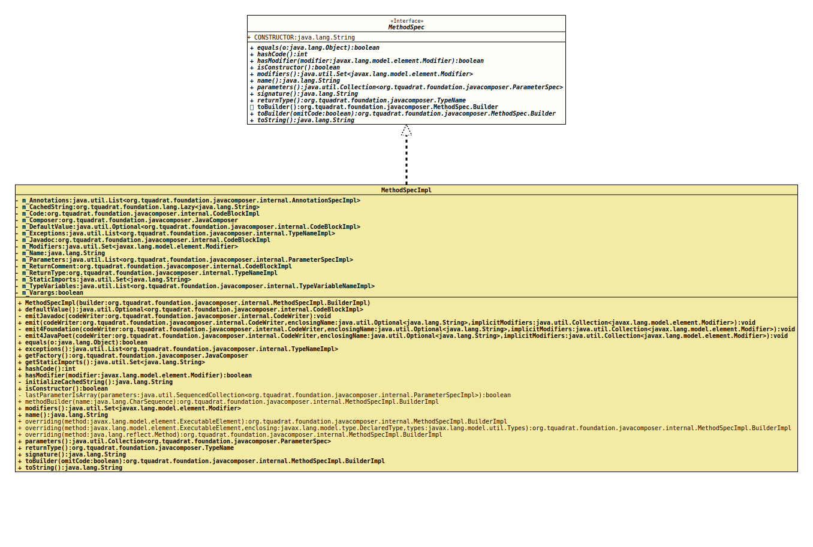

Interface MethodSpec
- All Known Implementing Classes:
MethodSpecImpl
- Author:
- Square,Inc.
- Modified by:
- Thomas Thrien (thomas.thrien@tquadrat.org)
- Version:
- $Id: MethodSpec.java 938 2021-12-15 14:42:53Z tquadrat $
- Since:
- 0.0.5
- UML Diagram
-

UML Diagram for "org.tquadrat.foundation.javacomposer.MethodSpec"
{kind=link}
-
Nested Class Summary
Nested Classes -
Field Summary
FieldsModifier and TypeFieldDescriptionstatic final StringThe "name" for a method that is in fact a constructor: "<init>". -
Method Summary
Modifier and TypeMethodDescriptionstatic MethodSpec.BuilderDeprecated, for removal: This API element is subject to removal in a future version.booleaninthashCode()booleanhasModifier(Modifier modifier) Checks whether the method has the given modifier.booleanChecks whether this method is a constructor.static MethodSpec.BuildermethodBuilder(CharSequence name) Deprecated, for removal: This API element is subject to removal in a future version.Replaced byJavaComposer.constructorBuilder()Returns the modifiers of this method.name()Returns the name of this method.static MethodSpec.Builderoverriding(Method method) Deprecated, for removal: This API element is subject to removal in a future version.Replaced byJavaComposer.overridingMethodBuilder(Method).static MethodSpec.Builderoverriding(ExecutableElement method) Deprecated, for removal: This API element is subject to removal in a future version.static MethodSpec.Builderoverriding(ExecutableElement method, DeclaredType enclosing, Types types) Deprecated, for removal: This API element is subject to removal in a future version.Returns the parameters for the this method.Return the return type for this method.Returns the signature for this method.default MethodSpec.BuilderReturns a builder that is initialised with all the components of this method.toBuilder(boolean omitCode) Returns a builder that is initialised with all the components of this method, like the result of a call totoBuilder(), but without the body code, if specified that way.toString()
-
Field Details
-
CONSTRUCTOR
The "name" for a method that is in fact a constructor: "<init>".- See Also:
-
-
Method Details
-
constructorBuilder
@Deprecated(since="0.2.0", forRemoval=true) @API(status=DEPRECATED, since="0.0.5") static MethodSpec.Builder constructorBuilder()Deprecated, for removal: This API element is subject to removal in a future version.Replaced byJavaComposer.constructorBuilder()Creates a builder that builds an instance ofMethodSpecfor a constructor.- Returns:
- The builder.
-
equals
-
hashCode
int hashCode() -
hasModifier
Checks whether the method has the given modifier.- Parameters:
modifier- The modifier.- Returns:
trueif the given modifier has been applied to this method,falseotherwise.
-
isConstructor
boolean isConstructor()Checks whether this method is a constructor.- Returns:
trueif the method is a constructor,falseif it is a regular method.
-
methodBuilder
@Deprecated(since="0.2.0", forRemoval=true) @API(status=DEPRECATED, since="0.0.5") static MethodSpec.Builder methodBuilder(CharSequence name) Deprecated, for removal: This API element is subject to removal in a future version.Replaced byJavaComposer.constructorBuilder()Returns a builder for a regular method.- Parameters:
name- The name for the method.- Returns:
- The builder.
-
modifiers
Returns the modifiers of this method.- Returns:
- The modifiers.
-
name
Returns the name of this method.- Returns:
- The name
-
overriding
@Deprecated(since="0.2.0", forRemoval=true) @API(status=DEPRECATED, since="0.0.5") static MethodSpec.Builder overriding(ExecutableElement method) Deprecated, for removal: This API element is subject to removal in a future version.Returns a new method spec builder for a method that overrides the given method.
This new builder will copy visibility modifiers, type parameters, return type, name, parameters, and throws declarations. An
Overrideannotation will be added.- Note:
-
- In JavaPoet 1.2 through 1.7 this method retained annotations from the method and parameters of the overridden method. Since JavaPoet 1.8 and in JavaComposer annotations must be added separately.
- Parameters:
method- The method to override.- Returns:
- The builder.
-
overriding
@Deprecated(since="0.2.0", forRemoval=true) @API(status=DEPRECATED, since="0.0.5") static MethodSpec.Builder overriding(ExecutableElement method, DeclaredType enclosing, Types types) Deprecated, for removal: This API element is subject to removal in a future version.Returns a new method spec builder that overrides the given method as a member of of the given enclosing class. This will resolve type parameters: for example overriding
Comparable.compareTo(T)in a type that implementsComparable<Movie>, theTparameter will be resolved toMovie.This will copy its visibility modifiers, type parameters, return type, name, parameters, and throws declarations. An
Overrideannotation will be added.- Note:
-
- In JavaPoet 1.2 through 1.7 this method retained annotations from the method and parameters of the overridden method. Since JavaPoet 1.8 and in JavaComposer annotations must be added separately.
- Parameters:
method- The method to override.enclosing- The enclosing class for the method.types- The type variables.- Returns:
- The builder.
-
overriding
@Deprecated(since="0.2.0", forRemoval=true) @API(status=DEPRECATED, since="0.0.8") static MethodSpec.Builder overriding(Method method) Deprecated, for removal: This API element is subject to removal in a future version.Replaced byJavaComposer.overridingMethodBuilder(Method).Returns a new method spec builder for a method that overrides the given method.
This new builder will copy visibility modifiers, type parameters, return type, name, parameters, and throws declarations. An
Overrideannotation will be added, but any other annotation will be omitted; this is consistent with the behaviour ofoverriding(ExecutableElement)andoverriding(ExecutableElement, DeclaredType, Types).- Parameters:
method- The method to override.- Returns:
- The builder.
-
parameters
Returns the parameters for the this method.- Returns:
- The parameters.
-
signature
Returns the signature for this method.- Returns:
- The signature.
-
returnType
Return the return type for this method.- Returns:
- The return type; will never be
null, not even for a constructor.
-
toBuilder
Returns a builder that is initialised with all the components of this method. Use this to implement a method from an interface.- Returns:
- The builder.
- See Also:
-
toBuilder
Returns a builder that is initialised with all the components of this method, like the result of a call to
toBuilder(), but without the body code, if specified that way.If the body is not copied, the method will be marked as
ABSTRACT, too.- Parameters:
omitCode-trueif the body code should not be copied,falseotherwise; in the latter case, the result is the same as fortoBuilder().- Returns:
- The builder.
-
toString
-
JavaComposer.constructorBuilder()